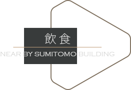
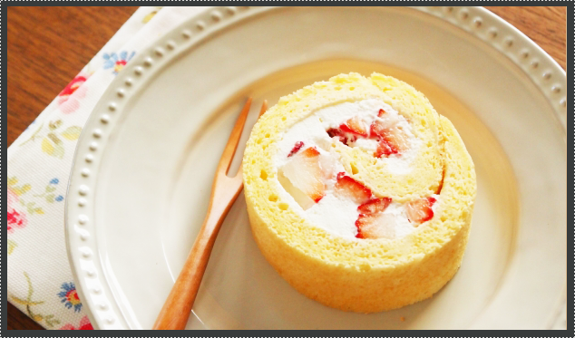
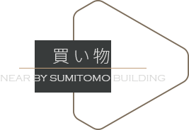
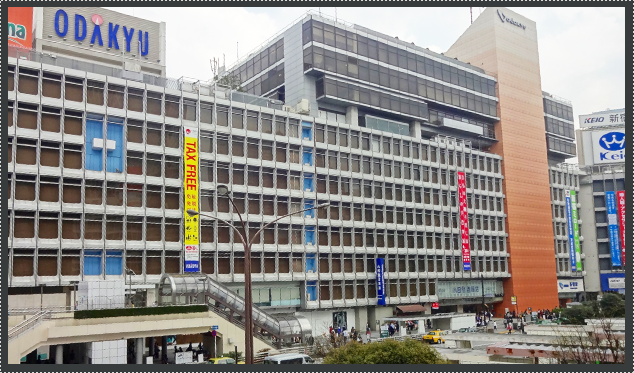
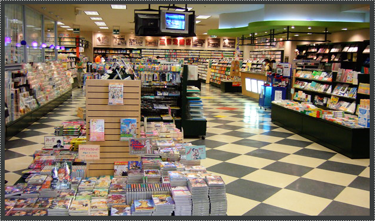
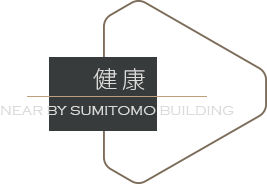
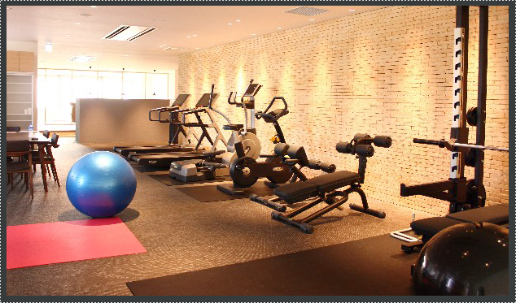

0120-070-806
0120-070-806


午後
仕事疲れて少し休憩したい時、コーヒーや甘いものが
ほしくなるでしょう。お手頃の値段で楽しめるカフェはたくさんあります。
| ポールバセット新宿 | ザコンランショップカフェ |
| カフェカトルヴァンヌフ | サウスコート |
| エクセルシオールカフェ | 東京ベリーニカフェ |

デパート
多様化するニーズに応えて、上質なアイテムや雑貨
などショップがあり、新たなライフスタイルを提案
しています。
| 京王百貨店 | 新宿ミロード |
| 小田急百貨店新宿本店 | ルミネ新宿 |
本屋
退社後、本屋を覗いてリフレッシュしたのち家に帰り、ネットサーフィンしたり本を読んだり適度にダラダラ
することによりリラックスできます。
| 三省堂書店 都庁店 | ブックファースト新宿店 |
| 末広堂書店本店 | 紀伊國屋書店 新宿本店 |

ジム
健康に意識高い方におすすめ、仕事帰りに通いやすい
ジムがあります。
| エニタイムフィットネス | ライザップ新宿店 |
| 深堀ヨガスクールShinjukuStudio | |
| マイゴルフスタイル新宿 |